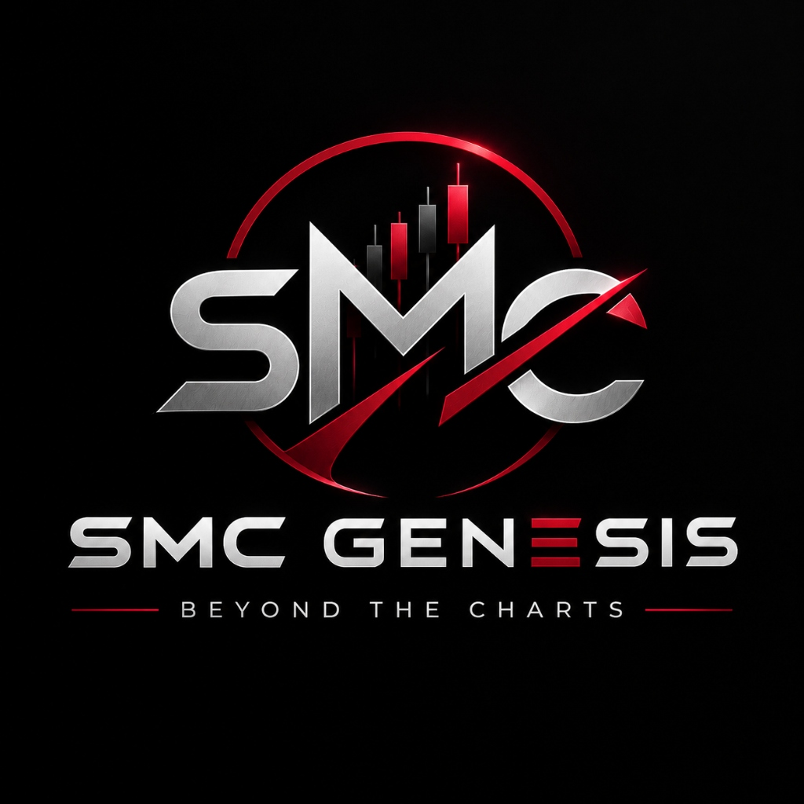

SMC GENESIS • BEYOND THE CHARTS
Institutional Trading Architecture & Masterclass.
An institutional-grade synthesis of Smart Money Concepts 2.0 & 3.0 engineered for Gold (XAU/USD) and major liquid markets. SMC Genesis replaces retail indicator guesswork with a structured 10-Module Quantitative Architecture—teaching you how institutions engineer liquidity, transfer multi-timeframe data, and execute with asymmetric risk precision.
A Quantitative Operating System for Institutional Price Delivery
Financial markets do not move by random chance or retail chart patterns. Every major price expansion is driven by institutional liquidity engineering—accumulating orders where retail traders place predictable stop-losses.
SMC Genesis (Version 4.0 Pro) is the proprietary flagship curriculum of BlueX Academy. It synthesizes foundational Smart Money Concepts 2.0 & 3.0 into a clean, rule-based institutional desk framework—designed to take a trader from raw structural mapping to surgical lower-timeframe execution without ever relying on lagging indicators.
Why 95% of Retail Traders Are Simply Liquidity
Retail technical analysis teaches traders to place stops right where central bank algorithms look to fill massive institutional orders. SMC Genesis teaches you to identify the engineered traps and execute alongside smart money.
Timeframe Execution Matrix: HTF Bias to LTF Refinement
How institutional capital transfers data across timeframes to eliminate retail noise and filter high-conviction entries.
Macro Directional Bias & Major BOS
Identifies primary institutional macro structural trend and establishes high-probability macro extreme zones.
S&D Zones & Pullback IBOS
Extracts institutional footprint zones and filters internal structural pullbacks to pinpoint real reversal points.
Surgical Trigger & Tight SL (RR ≥ 1:3)
Confirms micro fractal structural shifts, delivering surgical limit entries with minimal drawdown and maximum yield.
Master Topics & Core Institutional Pillars
A comprehensive introduction to the foundational topics taught inside SMC Genesis. Designed to equip serious traders with the algorithmic mechanics needed to navigate financial markets alongside smart money.
Institutional Mindset & TradingView Setup
The foundational operating philosophy: probabilistic thinking, emotional neutrality, and mechanical checklist discipline. Complete TradingView chart configuration, trendline templates, and zone styling.
Market Structure Foundations (BOS, IBOS, FTS)
The mechanical grammar of price action: distinguishing between Major Trend Continuation (BOS), Internal Retracement Pullbacks (IBOS), and Fractal Structural Shifts (FTS) without retail lagging indicators.
Multi-Timeframe Matrix & Data Transfer Theory
How institutions transfer data across timeframes: High Timeframe (H4/D1) macro bias synchronized with Middle Timeframe (M15/H1) structural pullbacks and Low Timeframe (M1/M3) surgical execution triggers.
The 4 Supply & Demand Extraction Models
Moving beyond basic support/resistance into institutional footprints: Range-Based, Pivot-Based, Single-Candle Extreme Order Block, and Fractal Wick S&D at high-displacement structural origins.
Mitigation Lifecycle & Last Defender (LDD)
The 3-phase institutional zone lifecycle: Zone Creation, Continuation Model, and Reversal Shift. Tracking unmitigated fresh zones, break-even settlements, and the Last Defender Demand/Supply protocol.
Liquidity Anatomy & The 5 Core Retail Traps
How smart money engineers liquidity pools: Buy-Side & Sell-Side liquidity, the 5 core retail traps (Swing stops, Double tops/bottoms, Trendline traps, Range purges, Inducements), and liquidity runs.
Sweep Taxonomy, BCC & BIO Theory
Deep dive into Wick Sweeps vs. Body Candle Closed (BCC) traps. Applying By Independent Objective (BIO) Theory where BOS confirms BOS, IBOS confirms IBOS, and FT confirms FT to prevent false validation.
Canonical Liquidity Sweeps (Cases 1, 2 & 3)
Surgical execution rules for Candlestick Closed In (-X-) notation: Case 1 (BOS sweep requiring IBOS shift), Case 2 (IBOS sweep requiring FT shift), and Case 3 (Fractal sweep requiring structural validation).
The 3 Execution Scenarios (Counter, Pro & Momentum)
Standard operating procedures: Scenario 1 (Counter-Trend Exhaustion at major zones), Scenario 2 (Pro-Trend Refinement Types 1, 2, 3), and Scenario 3 (Instant Momentum Breakout without deep pullback).
Institutional Trade & Risk Management
Defending capital with mathematical rigor: 2-3 Pip Stop Loss Padding against spread spikes, mechanical Break-Even rules, asymmetric 1:3 to 1:10+ RR targets, and strict 0.5%–1.0% risk limits.
Inside the BlueX Course & Community Ecosystem
Discover how SMC Genesis bridges theoretical market logic with live execution discipline, direct personal guidance, and an active trader community.
Market Structure & Institutional S&D Architecture
Master the foundational grammar of institutional trading: mapping major BOS, internal IBOS pullbacks, and extracting the 4 high-displacement base formations (RBD, DBR, RBR, DBD) with extreme vs. decisional precision.
Connect with BlueX on Telegram
Choose the channel that fits your goals: direct messaging with BlueX on Telegram (@Le_Bluue) for course inquiries and questions, or joining our active community group for daily market collaboration.
Direct Telegram DM
Reach out directly to BlueX on Telegram for course inquiries, setup discussions, chart consultation, and private feedback.
Direct DM BlueX: @Le_Bluue ↗BlueX Trading Community Group
Join hundreds of dedicated traders in our public community group. Discuss market structure, observe daily institutional bias breakdowns, and share ideas.
Join Community: t.me/moonbluefx ↗Learn Direct with BlueX: The SMC Genesis Institutional Class
We cut through retail illusions to teach you the mechanical precision required to trade institutional markets. Gain the confidence, rules, and execution habits of a professional operator.
Direct Telegram access to mentor Limeng Sovann (@Le_Bluue) for chart reviews, setup auditing, and psychological calibration.
Zero subjective guesswork. Definitive rules for body-close BOS, 4 S&D extraction types, and 3 execution scenarios.
Analyze live Gold (XAU/USD) market structure before high-volume sessions. See how institutional zones are identified in real time.
Lifetime access to the private community group (t.me/moonbluefx) for daily bias sharing, key levels, and ongoing member growth.
Recommended Brokers for SMC Execution
Smart Money Concepts execution requires ultra-low latency, tightest raw spreads, deep order books, and zero artificial slippage. We recommend the following tier-1 regulated partners:
Treno Markets
Raw spread liquidity, lightning-fast order routing, and institutional trade execution optimal for precise lower-timeframe SMC entries.
Open Treno Account ↗GTC GO
Globally regulated STP broker with deep institutional FX and precious metals liquidity, segregated accounts, and ultra-reliable uptime.
Open GTC GO Account ↗Lirunex
Tier-1 licensed broker with competitive spreads, rapid deposit/withdrawal options, and robust MetaTrader 4/5 infrastructure.
Open Lirunex Account ↗Everything You Need to Know About SMC Genesis
Retail analysis relies on lagging indicators (RSI, moving averages) and retail trendlines that smart money routinely sweeps for liquidity. SMC Genesis teaches you how institutions actually move price, where stop loss pools accumulate, and how to execute strictly after liquidity sweeps into refined Supply & Demand zones.
Beginners actually often excel faster because they do not have years of bad retail indicator habits to unlearn. SMC Genesis starts from the absolute bedrock of market liquidity and builds up step-by-step into advanced multi-timeframe execution.
SMC Genesis is a universal institutional Supply & Demand framework. It applies seamlessly to Gold (XAUUSD), major Forex pairs (EURUSD, GBPUSD, USDJPY), equity indices (US30, NAS100), and liquid cryptocurrencies (BTC, ETH).
SMC setups target asymmetric profiles starting from 1:3 up to 1:10+. Because entries are refined on lower timeframes at pristine imbalance zones, stop losses are tight and structural, maximizing your capital efficiency.
To apply for mentorship or ask private questions, send a direct Telegram message (DM) to BlueX at @Le_Bluue. To join the public discussion and daily market outlooks, join our official Community Telegram group at t.me/moonbluefx.